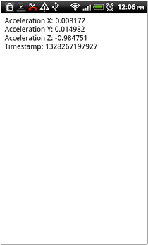
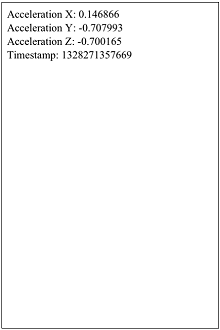

PhoneGap-compatible functions in our Wormhole JavaScript Library make it possible to run most existing PhoneGap apps in the MoSync SDK with little or no need for change. And it's easy to add functionality to your app (like Native UI) not available out-of-the-box with PhoneGap.
Most of the commonly-used PhoneGap functions (especially W3C compliant modules) are implemented Wormhole JavaScript Library. Wormhole is compatible with selected functionality from the PhoneGap API version 1.2.0.
For list of the currently supported functions, see our Feature/Platform Support page.
We will use one of the examples from PhoneGap website for this exercise. If you want to try MoSync with your own application, simply follow the same steps.
(Note: We assume that you have a basic understanding of how to use the MoSync SDK to create HTML5 and JavaScript projects. If not, check out our guides Getting Started with HTML5 and JavaScript and Developing Apps in HTML5/JavaScript).
1. Start by creating a new HTML5/JS Web UI project in MoSync.
2. Next, replace the default index.html file with your PhonGap application’s index.html file. If you do not have a PhoneGap application handy, you can copy one from their website, for example the full example for accelerometer.watchAcceleration at their website.
3. Find the line containing the “phonegap.js” reference and replace it with the reference with “js/wormhole.js”. Your library import line should change from:
<script type="text/javascript" charset="utf-8" src="phonegap.js"></script>
to:
<script type="text/javascript" charset="utf-8" src="js/wormhole.js"></script>
You are now ready to run you app!
If you have installed the Windows Phone SDK, you can run the application in Windows Phone emulator which has support for accelerometer testing. Alternatively you can build an application package and send it to a device that has an accelerometer.
Here you can see the screens that are displayed when the PhoneGap accelerometer.watchAcceleration app runs on Android and iOS/iPhone:
|  |  |
| PhoneGap accelerometer app on Android | PhoneGap accelerometer app on iOS |
Moving your PhoneGap application to the MoSync SDK has several benefits:
Tell us about your experiences with porting PhoneGap apps in the HTML5, JavaScript, Wormhole forum.
Report bug and issues, or request features in the Issue Tracker.